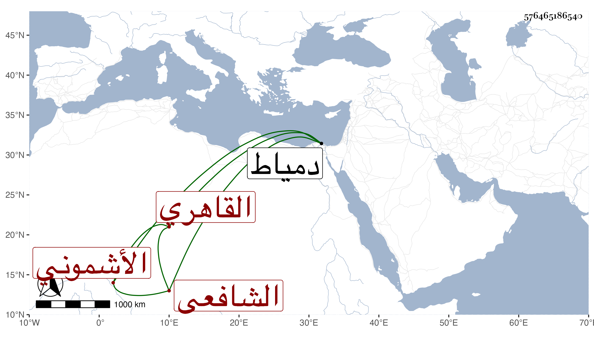

0902Sakhawi.DawLamic.ITO20230111-ara1.EIS1600.576465186540
Biography ID: 576465186540
10
علي بن محمد بن عيسى بن يوسف بن محمد النور أبو الحسن بن الشمس بن الشرف الأشموني الأصل ثم القاهري الشافعي ويعرف بالأشموني . ولد في شعبان سنة ثمان وثلاثين وثمانمائة بنواحي قناطر السباع ونشأ فحفظ القرآن والمنهاج وجمع الجوامع وألفية النحو واشتغل من سنة أربع وخمسين بعد حضوره إملاء شيخنا فيما قال فأخذ في الفقه عن المجلي والعلم البلقيني والمناوي والبامي ولازمه كثيرا والنور الجوجري وهو أول شيوخه وكذا أخذ في الأصلين والعربية والفرائض وغيرها عن جماعة ومن شيوخه في ذلك وغيره الكافياجي وسيف الدين التقي الحصني والشارمساحي ، وتميز وبرع في الفضائل وتصدى في تلك النواحي للإقراء من سنة أربع وستين فانتفع به الطلبة وحضر بعض ختومه العبادي والفخر المقسي وجميعها الزين عبد الرحيم الأبناسي ، وتلقن الذكر من علي حفيد يوسف العجمي وسمع الحديث وشرح ألفية ابن مالك وقطعة من التسهيل ونظمه لجمع الجوامع ومجموع الكلائي وإيساغوجي في المنطق وعمل حاشية على الأنوار للأردبيلي وغيرها ، ورد على البقاعي انتقاده قول الغزالي ليس في الإمكان أبدع مما كان ، وكنت ممن قرض نظمه لجمع الجوامع وراج أمره هناك ورجح علي الجلال بن الأسيوطي مع اشتراكهما في الحمق غير أن ذلك أرجح ، وقد حج في سنة خمس وثمانين موسميا كل ذلك وهو متكسب بالشهادة ثم ولاه الزين زكريا القضاء بل أرسله لدمياط عقب موت الولوي البارنباري فدام ثلاث سنين وانتفع به هناك وكان المنصور يذاكره ثم امتحن بالترسيم مدة كان الاستادار يمده فيها ويسعفه إلى أن خلص وأقام مستمرا على نيابته وأشغاله ولأهل تلك النواحي به غاية النفع كان الله له .
